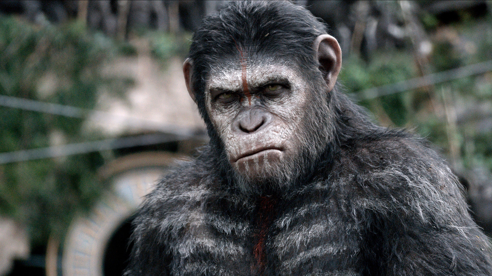
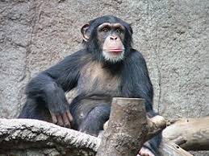

Chimpanze
Os chimpanzés são primatas altamente inteligentes que habitam as florestas e savanas da África central e ocidental. Considerados nossos parentes mais próximos no reino animal, eles compartilham cerca de 98% do DNA com os seres humanos.

Esses animais são extremamente sociais e vivem em grupos complexos, com uma hierarquia bem definida. Sua dieta é onívora, composta principalmente de frutas, folhas, sementes, insetos e, ocasionalmente, pequenas presas. Os chimpanzés são conhecidos por seu uso de ferramentas e por sua habilidade de se comunicar com expressões faciais, gestos e vocalizações.

Infelizmente, os chimpanzés estão ameaçados pela perda de habitat e pela caça ilegal, o que torna a conservação dessa espécie essencial para sua sobrevivência.